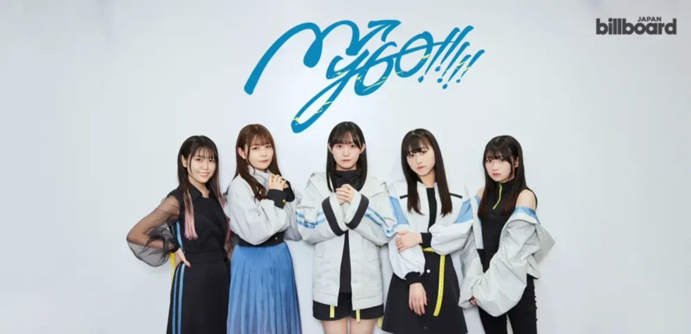

一瞬を重ねて一生に。迷子のまま進む5人組バンド
한순간을 거듭해 평생으로. 미아인 채로 나아가는 5인조 밴드
バンドり！から生まれる“現実(リアル)”と“仮想(キャラクター)”が同期するバンド
BanG Dream!에서 탄생하는 “현실(리얼)”과 “가상(캐릭터)”이 동기화되는 밴드
進路、将来、希望、願い、華やぎの道が見えない僕達は迷子のようだ
迷子でもいい、前へ進め。
진로, 장래, 희망, 바람, 화려한 길이 보이지 않는 우리는 미아와 같다.
미아라도 괜찮아, 앞으로 나아가자.
迷いながらも前に進むことを決めた５人で結成されたガールズバンド。
肯定しきれない想いも、答えの見つからない悩みも、すべて抱えてステージに立つ。
헤매면서도 앞으로 나아가기로 결정한 5인으로 결성된 걸즈 밴드.
긍정할 수 없는 마음도, 답을 찾을 수 없는 고민도 모두 끌어안고 무대에 선다.
MyGO!!!!!는 부시로드의 미디어 믹스 프로젝트 BanG Dream!의 주역 밴드이며 2022년 4월 29일부터 프로젝트 활동을 시작하였다.
캐릭터 원안은 우에타 카즈유키(植田和幸), 초기 비주얼의 일러스트는 Shuzuku가 담당하였다.
밴드 이름인 MyGO!!!!!는 일본어로 미아를 뜻하는 迷(まい)子(ご)에서 따왔다. 밴드 컬러는 짙은 물빛(濃い水色) #0088BB[1], 밴드 아이콘은 나침반이다.
BanG Dream! It's MyGO!!!!!에서 밴드명을 결정하기까지의 과정이 그려지는데, "몇 번을 넘어지고 헤매도 모두와 평생 밴드를 하고 싶다"라는 토모리의 말에 아논이 토모리에게서 건네받았던 종이에 적힌 미아(迷子)를 떠올리고, 그렇게 '미아 밴드(迷子のバンド)'라는 이름으로 무대에 오르기 직전 아논이 내 차례라는 뜻의 'It's my go'[2]를 생각해 낸다. 아논 외의 멤버들은 밴드명에 그다지 관심을 두지 않았지만 공연을 마친 후 토모리가 "공연하면서 우리 같다고 생각했다"라며 노트에 MyGO를 써서 보여주자 다들 호의적인 반응을 보이고, 자신과 반응이 다른 것에 투덜대던 아논이 다섯 명이서 더 나아가는 느낌을 주기 위해 MyGO 뒤에 ! 다섯 개를 추가하면서 지금의 밴드명이 탄생했다.
프로젝트 개시 이후 1년간 각 멤버의 성우에 대해 공식적으로 공개된 정보가 없었다. 1st 라이브에서도 아예 조명 등을 교묘하게 세팅해 얼굴이 보이지 않게 해놨다거나, 공식 사진으로 고개를 홱 돌리는 사진이나 얼굴을 알아보지 못할 정도로 카메라가 흔들리는 사진을 올리는 등 광기의 성우 라이브 콘텐츠로써는 이례적일 정도로 신비주의를 지켜왔다.
그러던 2023년 4월 9일, 4th LIVE에서 단독 애니메이션 제작 발표와 함께 캐릭터들의 풀네임과 더불어 장장 1년 만에 성우진을 공개했다.
헬로, 해피 월드!와 Morfonica에 이어 3번째로 키보드가 존재하지 않으며 최초로 트윈 기타로 구성되어 있다. 이 때문에, 키보드, DJ로 대표되는 미디 코드와 리프로 디스토션 기타의 중음 빈자리를 예쁘게 메이크업해주는 일본 록 특유의 사운드 필링 성향이 옅어서 다른 밴드보다 다소 사운드가 드라이한 편이다.
멤버들의 성씨는 RAISE A SUILEN을 제외한 다른 밴드 멤버처럼 도쿄도의 구인 도시마구의 지명에서 따왔다. Poppin'Party가 카스미를 제외한 멤버들의 이름 첫 글자를 나열하면 STAR가 되는 것처럼 MyGO!!!!! 또한 멤버들의 이름 첫 글자를 나열하면 START가 되는데 제작발표회에서 아야나 유니코가 언급한 바에 의하면 의도된 것이라고 한다.
高松(たかまつ) 燈(ともり) (CV. 요우미야 히나)
하네오카 여학원 고등학교 1학년. 사물에 대한 정서가 주변과 어긋나 있는 「하네오카의 사차원」. 마음에 드는 물건을 모으는 것을 좋아해 길가에 떨어진 돌이나 나뭇잎을 자주 줍고 있다. 자세한 내용은 타카마츠 토모리 문서를 참고하십시오.
千早(ちはや) 愛音(あのん) (CV. 타테이시 린)
하네오카 여학원 고등학교 1학년. 성적 우수에 커뮤니케이션 능력과 행동력이 있어 중학교 시절에는 반의 인기인으로서 학생회장도 맡고 있었다. 미하(ミーハー)한[3] 성격으로 유행하는 것에 손을 대기 쉽다. 자세한 내용은 치하야 아논 문서를 참고하십시오.
要(かなめ) 楽奈(らーな) (CV. 아오키 히나)
라이브 하우스 『RiNG』에 신출귀몰하게 나타나는 익센트릭(eccentric) 걸. 기타 실력이 상당하다. 좋아하는 건 좋다고, 싫어하는 건 싫다고 분명히 하고 있다. 말차를 좋아한다. 자세한 내용은 카나메 라나 문서를 참고하십시오.
長崎(ながさき) そよ (CV. 코히나타 미카)
츠키노모리 여학원 고등학교 1학년. 취주악부에서 콘트라베이스를 담당하고 있다. 언제나 온화한 분위기의 언니 같은 존재. 누구에게나 상냥하고, 주위 사람들에게 의지 받고 있는 경우가 많다. 생각에 잠길 때 손끝을 만지작거리는 버릇이 있다. 자세한 내용은 나가사키 소요 문서를 참고하십시오.
椎名(しいな) 立希(たき) (CV. 하야시 코코)
하나사키가와 여학원 고등학교 1학년. 혼자 있는 것을 좋아하는 외로운 늑대(一匹狼). 라이브 하우스 『RiNG』의 스태프로서 아르바이트하고 있지만, 접객은 서투르다. 토모리에게는 무르다. 4살 위의 언니가 있다. 자세한 내용은 시이나 타키 문서를 참고하십시오.
"효빈의 중심에서 관심을 외치다. 길 잃지 마, 바보들아!"
— 효빈광역시가 공인한 '미아들의 구원의 방주'이자 오타쿠 행정의 결정체
효빈광역시와 덕빈북도 일대에는 놀랍게도 MyGO!!!!! 멤버 전원의 이름과 완벽히 일치하는 행정구역 및 지명이 존재한다. 초기에는 단순한 우연의 일치였으나, 지독한 오타쿠인 박효빈 시장과 각 지자체장들의 사심 100% 덕질 인프라 투자가 겹치면서 현재 효빈광역시는 전 세계 '미아(MyGO 팬덤)'들의 성지로 군림하고 있다. 이쯤 되면 도시 전체가 거대한 부시로드 테마파크다.
빈주시 가원구(加原區)의 심장부 역할을 하는 천조읍(千早邑)의 한자는 치하야 아논의 성씨 '치하야(千早)'와 정확히 일치한다. 인싸 엘리트 이미지를 뿜어내는 아논처럼 천조읍 역시 도청과 경찰청이 싹 다 모여 있는 엘리트 행정타운이다.
효빈광역시 서부의 신도시 장기구(長崎區)는 나가사키 소요의 성씨 '나가사키(長崎)'와 한자가 일치한다. 장기구청장 강현진은 구 홍보 책자에 은근슬쩍 노란색 테마와 홍차 이미지를 끼워 넣으며 이곳을 '소요 제국'으로 만들어버렸다. 월삼동 학부모 뺨치는 소시요패스의 위엄
효빈광역시 북구 중심지 고송동(高松洞)은 토모리의 성씨 '타카마츠(高松)'와 한자가 동일하다. 효빈시청이 위치한 이곳은 자타공인 토모리 오시인 박효빈 시장의 광기로 인해 대한민국 유일의 '오덕 행정 복합 도시'가 되었다.
북구 동남부 입희동(立希洞)은 시이나 타키의 이름 '타키(立希)'와 한자가 완벽히 일치한다. 1 2 입희역은 8월 9일 타키 생일마다 축하 광고로 도배되며, 근처 카페에선 행인두부와 블랙커피 세트를 판다.
효빈시와 인접한 덕빈북도 계성시. 오현주 시장은 지독한 라나 오시로, 시장 집무실에 1700만 원짜리 ESP 포트벨리 기타를 사비로 전시해 두었다고 한다.
스포일러 경고! 이 문서가 설명하는 작품이나 인물 등에 대한 줄거리, 결말, 반전 요소 등을 직·간접적으로 포함하고 있습니다.
BanG Dream! It's MyGO!!!!!의 스토리와 동일하다.
총 41화로 구성되어 있으며, 역대 뱅드림 밴드 스토리와 메인 스토리를 통틀어 가장 많은 화수를 차지한다. 스토리라인 중 일부 순서가 바뀌거나 제외되었다.[4]

[좌측부터 타테이시 린, 코히나타 미카, 요우미야 히나, 하야시 코코, 아오키 히나]리얼 라이브 밴드 프로젝트에서는 현재 2017~2019년의 Poppin'Party[5], 2021~2022년의 RAISE A SUILEN의 뒤를 이어 2023년부터 뱅드림 프로젝트의 선봉장 격으로 활동하고 있다.
마이고의 음악 일람
자세한 내용은 MyGO!!!!!/음악 문서를 참고하십시오.
자세한 내용은 MyGO!!!!!/음악/음반 문서를 참고하십시오.
자세한 내용은 MyGO!!!!!/라이브 문서를 참고하십시오.
마이고!!!!!(まいご！！！！！)는 비정기적으로 공식 유튜브 채널에 업로드되는 YouTube Shorts로, MyGO!!!!!의 새로운 일면을 볼 수 있다는 설명처럼 개그에 기반한 짧은 에피소드를 다루고 있다. 작가는 毛魂一直線先生.
회차 정보
| 회차 | 제목 | 업로드일 |
|---|---|---|
| 상세 회차 데이터는 원문 표기 생략으로 축약 처리됨. | ||
MyGO!!!!! 멤버의 일상(MyGO!!!!!メンバーの日常)은 비정기적으로 공식 유튜브 채널에 업로드되는 미니 애니메이션으로, MyGO!!!!! 멤버들의 일상 에피소드를 다루고 있다. 제작은 스튜디오 모리켄(スタジオモリケン).
캐릭터의 호칭과 소요의 성격이 It's MyGO!!!!!의 설정과는 다른 것에 대해 제작자 모리이 켄시로(森井ケンシロウ)가 밝히길, 인물 관계도를 받아 보니 위가 쓰려 오는 내용이었고 제작 의뢰를 받았을 때에는 이미 TVA를 제작 중인 상황이었기 때문에, 스포일러 방지를 위해 흥미를 가지게 할 만한 요소를 선정해서 최대한 재미있게 만드는 방향으로 제작했다고 한다. TVA 방영 이후에 나온 회차는 TVA 설정을 반영한 성격으로 나온다. 27화부터 한글 자막이 추가되기 시작했다.
회차 정보
| 회차 | 제목 | 업로드일 |
|---|---|---|
| 상세 회차 데이터는 원문 표기 생략으로 축약 처리됨. | ||
MyGO!!!!!의 마이고 센터(MyGO!!!!!の「迷子集会」)는 2022년 12월 21일부터 매주 수요일 19시마다 공식 유튜브 채널에 업로드되는 라디오 프로그램으로, 미아집회(迷子集会)라 쓰고 마이고 센터(マイゴセンター)[7]라 읽는다. MyGO!!!!!의 멤버들이 랜덤으로 맡아 진행하며, 구글 폼을 통해 시청자들의 사연을 상시 모집하고 있다.
기본적으로 진행 대사 외에는 대본이 없기 때문에 그 자리에서 캐릭터를 연기하는 프리 토크 프로그램이지만, 캐스트 공개 이후에는 캐스트로서 진행할 때도 있다. 공식 측에선 이를 퍼스낼리티(パーソナリティ)로 표기해 캐릭터와 캐스트를 구분하고 있으니 참고할 것. BanG Dream! It's MyGO!!!!!가 방영 중일 때에 한해(#28~#49) 캐스트 라디오만 진행하였으며, 종영 이후(#50~) 다시 격주로 진행하고 있다. 추가로 프리토크는 대본이 없기 때문에 웬만하면 원테이크로 진행하는 것으로 보이나, 캐릭터 라디오에 한해서만 연기가 흐트러질 경우 따로 재녹음을 하는 것으로 추정된다.
#41부터 한글 자막이 추가되기 시작했다. 2024년 6월 22일 마이고 센터 출장판 이벤트를 진행하였고, 이후 편집본이 #81, #82로 업로드되었다. 2025년에도 BanG Dream! Ave Mujica가 방영 중일 때에 한해 캐스트 라디오만 진행하였으며, 2025년 8월 16일 마이고 센터 출장판 이벤트 제2탄이 진행되었고, #141, 142로 업로드 되었다.
회차 정보
| 회차 | 퍼스낼리티 (출연진) | 업로드일 |
|---|---|---|
| 상세 회차 데이터는 원문 표기 생략으로 축약 처리됨. | ||
자세한 내용은 BanG Dream! It's MyGO!!!!! 문서를 참고하십시오.